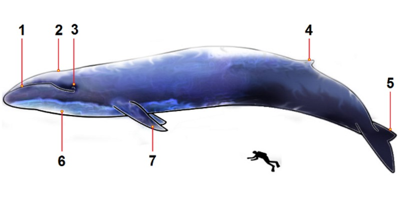

Als jij denkt aan het grootste dier ter wereld, waar denk jij dan aan? Aan een olifant? Of misschien aan een walvis? Die dieren zijn misschien groot, maar het grootste dier ter wereld is de blauwe vinvis. Hij is familie van de Walvissen. De blauwe vinvis wordt zo genoemd door de blauw-grijzige kleur van zijn huid. En het is een vinvis, want ja hij heeft een vin op de achterkant van zijn rug. De blauwe vinvis is niet alleen het grootste dier dat nu leeft, maar ook het grootste dier dat ooit geleefd heeft in de geschiedenis. De blauwe vinvis wordt erg lang. Een volwassen vinvis wordt ongeveer tussen de 25 en de 30 meter. En wat bijzonder is dat bij dit dier de vrouwtjes het grootst worden en dus niet de mannen. Een mannetjes blauwe vinvis wordt ongeveer 25 meter en een vrouwtje wordt ongeveer 27 meter.
Als jij denkt aan het grootste dier ter wereld, waar denk jij dan aan? Aan een olifant? Of misschien aan een walvis? Die dieren zijn misschien groot, maar het grootste dier ter wereld is de blauwe vinvis. Hij is familie van de Walvissen. De blauwe vinvis wordt zo genoemd door de blauw-grijzige kleur van zijn huid. En het is een vinvis, want ja hij heeft een vin op de achterkant van zijn rug. De blauwe vinvis is niet alleen het grootste dier dat nu leeft, maar ook het grootste dier dat ooit geleefd heeft in de geschiedenis. De blauwe vinvis wordt erg lang. Een volwassen vinvis wordt ongeveer tussen de 25 en de 30 meter. En wat bijzonder is dat bij dit dier de vrouwtjes het grootst worden en dus niet de mannen. Een mannetjes blauwe vinvis wordt ongeveer 25 meter en een vrouwtje wordt ongeveer 27 meter.
Etiam rhoncus. Maecenas tempus, tellus eget condimentum rhoncus, sem quam semper libero, sit amet adipiscing sem neque sed ipsum. Nam quam nunc, blandit vel, luctus pulvinar, hendrerit id, lorem. Maecenas nec odio et ante tincidunt tempus. Donec vitae sapien ut libero venenatis faucibus. Nullam quis ante. Etiam sit amet orci eget eros faucibus tincidunt. Duis leo. Sed fringilla mauris sit amet nibh. Donec sodales sagittis magna. Sed consequat, leo eget bibendum sodales, augue velit cursus nunc, quis gravida magna mi a libero. Fusce vulputate eleifend sapien. Vestibulum purus quam, scelerisque ut, mollis sed, nonummy id, metus. Nullam accumsan lorem in dui. Cras ultricies mi eu turpis hendrerit fringilla. Vestibulum ante ipsum primis in faucibus orci luctus et ultrices posuere cubilia Curae; In ac dui quis mi consectetuer lacinia.